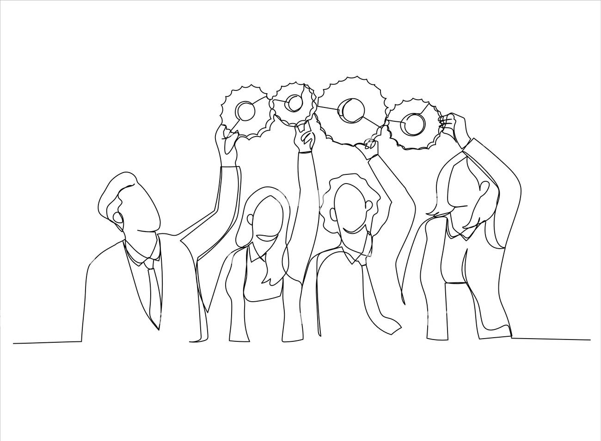

Most delivery problems aren't technology problems — they're alignment problems. We bring the business case, the build, and the day-to-day operations into one view, before a requirement is ever locked in.
We've occupied every seat at this table — sponsor, technologist, integrator, and operator — as both customer and vendor.
In our experience, scope that drifts from its original business case is the most common cause of over-engineered solutions — usually because no one isolated the 20% of scope driving 80% of the value. Schedule, budget, and spec are necessary, but they're not enough: a project can hit all three and still be hard to operate, or already obsolete.
Our answer is 360-degree design: before we write a spec, we learn how the business actually makes money, map how work moves through systems, processes, and people, and pressure-test every requirement against what it protects, what it costs, and how it lands on day-two operations. What's left is a scope the client chose with full visibility — not one they inherited.
Whether engaged to lead or to support, Naivik brings structure and discipline to complex initiatives — keeping the scope aligned to the strategy throughout the delivery.
The challenge: Most process inefficiency isn't a technology gap — it's procedures that have lost sight of their value, and process owners not trained to spot opportunities for implementing AI.

The challenge: Scope that drifts from its original business case is the most common driver of over-built solutions — usually because no one isolated the fraction of the solution carrying most of the value.
The challenge: Delivery teams often optimize narrowly for schedule, budget, and specification, producing solutions that are difficult to operate or quickly overtaken by competitive pressure.
Directed the migration of a national telecommunications platform from an on-premises environment to a cloud-native architecture — encompassing infrastructure design, a Day 2 operating model and support contract, and the integration of more than thirty applications onto TM Forum–aligned APIs, including a full legacy-to-TMF database transformation.
Assumed leadership of a stalled initiative combining new hardware with an entirely new cloud-based software platform — the client's first venture of this kind. Restored program momentum and delivered a successful market launch.
Served as business analyst and product manager for a new satellite services business line, designing the customer journeys and BSS requirements governing sales, order fulfillment, and Day 2 support across the client organization and its systems integrator.
Partner with Naivik to build and deliver a roadmap that aligns your vision, your systems, your processes, and your people.
Book Free Consultation